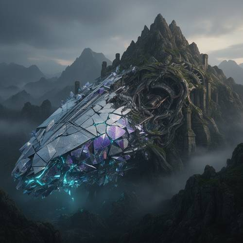

Relationship — The wreckage of a huge alien spacecraft, part of its hull made of exot
The wreckage of a huge alien spacecraft, part of its hull made of exotic metal crystals, and another part blended with ancient rocky mountains.


Judge — Direct
- FAILRelationship - Composition — In the image, there is a large, wrecked spacecraft and a separate, large cluster of crystals floating near its hull. The hull itself is depicted as being made of dark, greebled metallic panels and structures, not from crystals. The crystals appear to be an external component or a growth, rather than an integral material of the hull's composition.
- PASSAttribute - Material — The image features a prominent cluster of large, multifaceted crystals in the lower-left portion. These crystals are translucent with a metallic sheen and have blue and purple internal reflections, visually matching the description of 'exotic metal crystals'.
- PASSAction - Contact Interaction — The right side of the huge spacecraft is shown impacted against and partially embedded within a range of rocky mountains. The wreckage and the rock formations appear to be physically intertwined in the area of contact, visually representing the spacecraft being 'blended' with the mountains.
Judge — Continuum
- PASSRelationship - Composition — The hull of the large, wrecked spacecraft is depicted as being composed of multiple sections. The front and lower part of the hull consists of fractured, crystalline structures, while another section is made of silvery, metallic panels, and a third part is a dark, complex tangle of mechanical components. This directly visualizes the hull being made of different parts, one of which is crystalline.
- PASSAttribute - Material — The image displays materials that visually match the description of 'exotic metal crystals'. On the lower left of the spacecraft wreckage, there are large, geometric, faceted structures resembling crystals. They are purple and emit a bright cyan glow from within the cracks, which suggests an 'exotic' nature. They are integrated with other clearly metallic components of the hull.
- PASSAction - Contact Interaction — The image shows a direct physical interaction between the spacecraft wreckage and the rocky mountain. The right side of the spacecraft is deeply embedded into the mountainside. Dark, gnarled, root-like metallic structures from the craft are intertwined with the rock and what appear to be ancient stone pillars and arches on the mountain, creating a seamless fusion or blend between the two entities.
What the agent did
Thinking
The user is asking for an image: the wreckage of a massive alien spaceship, with part of the hull made of exotic metal crystals, and another part fused with ancient, rugged mountains. This is a sci-fi / fantasy scene. Let me think about the composition: - A massive alien spaceship wrecked in the middle of an ancient mountain landscape - Part of the hull is made of exotic metal crystals (crystal-like metallic surface, glowing, iridescent) - Another part of the hull has fused with the ancient mountains (stone / rock fused with metal, as if the ship crashed into the mountain and grew into it, or the mountains absorbed it) I'll write a detailed visual prompt and generate it with flux2-dev. Let me flesh out the visual details: - Massive scale: the wreckage is enormous compared to its surroundings - Alien design: smooth organic curves, strange geometry, broken and torn-open sections - Crystal metal: iridescent, geometric facets, pale cyan/violet glow seeping from the cracks - Fused section: rock and metal blended together, petrified, moss-covered, as if the mountain grew over it - Environment: ancient rugged mountain range, mist, dusk light, a sense of desolation - Atmosphere: cinematic, epic scale, dramatic lighting Let me write the prompt: "An epic cinematic wide shot of a colossal alien spaceship wrecked in an ancient rugged mountain range. Half of the ship's hull is made of exotic crystalline metal — faceted geometric panels in iridescent silver-blue and violet, cracked with faint bioluminescent cyan light seeping from the fissures. The other half of the hull has fused with the mountains: rock and metal seamlessly blended together, stone pillars and metal ribs growing into each other, moss and lichen covering the ancient wreckage. Torn-open sections reveal strange alien interior structures. Massive scale — the wreckage stretches across several peaks. Thick fog, moody dusk light, dramatic rim lighting, sense of desolation, ultra-detailed, photorealistic cinematic sci-fi landscape." Should be a wide aspect ratio. Let's go with 1536x1024 or 1344x768. The harness controls the size... "the size and seed are controlled by the harness" — but I can pass width/height. Default is 1024x1024. For a landscape scene, 1536x864 or similar would be good. Actually the notes say size is controlled by the harness — but for a landscape composition I want to choose a wider aspect. Let me pass width 1536, height 864. Hmm, but maybe I should leave the default. For a scene with a huge ship and mountains, a wider aspect ratio works better. I'll go with 1536x896 or 1536x1024. I'll use 1536x864 (16:9). After that, I'll inspect, mark the best, and edit if necessary. Let me generate it.
Step 1 — `generate_image`
{
"model": "flux2-dev",
"prompt": "Epic cinematic wide shot of the wreckage of a colossal alien spacecraft destroyed in ancient rugged mountains. Half of the ship's hull is made of exotic metal crystals: faceted geometric crystal-metal panels in iridescent silver-blue and violet, fractured, with faint cyan bioluminescent light glowing from deep fissures. The other half of the hull has blended and fused with the ancient rocky mountains: stone and metal seamlessly grown together, rock pillars and twisted metal ribs merging, moss and lichen creeping over the ancient wreckage, the mountain peak appearing to have swallowed the ship. Torn-open sections reveal strange alien interior structures and broken conduits. Enormous scale, the wreck spanning several mountain peaks. Thick low fog, moody overcast dusk light, dramatic rim light, desolate atmosphere, photorealistic cinematic sci-fi landscape, ultra detailed.",
"width": 1536,
"height": 864
}Result img_0
Thinking
The image came out pretty well. Let me evaluate it against the prompt: 1. Wreckage of a giant alien spaceship — yes, a massive ship-like structure is embedded in the mountains. 2. Part of the hull made of exotic metal crystals — yes, the left/front section has faceted crystal-metal panels, and there are violet/purple crystals with a cyan glow at the bottom. 3. The other part fused with ancient rugged mountains — yes, the right/rear section has rock and metal fused together, covered in moss, with twisted structures blending into the mountains. The composition is good: foggy mountains, dusk light, a sense of desolation. The image looks great. Critique: - The ship reads more as a crashed hull jutting out of the mountain peak — that's fine, it fits the "wreckage." - The crystal section is quite prominent, with glowing crystals at the bottom. Good. - The fused section is clearly rock + metal + moss. Good. - Overall, it's a strong match. There's a bit of ambiguity as to whether it reads as "alien" vs. "fantasy," but the crystalline alien structure is clear enough. Is it worth improving? The prompt is fully satisfied. I could inspect the details, but the image looks clean. Mark this as the best. Should I inspect the regions to verify quality? According to the guidance, if the prompt is asking for rendered text, inspect the crop (there's no text here). The image looks solid. I'll mark the best and stop — good enough is a stopping condition. Actually, let me quickly check one point: is the "alien spaceship" reading clearly a spaceship? The left half shows an elongated hull with panels — it does read as a crashed ship. Yes, no problem. Mark img_0 as the best.
Model
The generated result matches the prompt well: the front half of the hull is faceted crystal metal glowing with violet and cyan light, the rear half is clearly fused with the mountains — stone, twisted metal, and moss blending together — and the wreckage stretches across the peaks amid misty, desolate mountain scenery. I'm marking this as the best result.
Step 2 — `mark_best`
{
"image": "img_0",
"reason": "Fully satisfies the prompt: colossal alien spacecraft wreck, crystal-metal hull section with glowing fissures, and the opposite half seamlessly blended with ancient rocky mountains, in an atmospheric desolate mountain setting."
}Thinking
The image is complete and has been marked. Following the stopping rule, I'll stop here — every element is present and correct. I'll provide a brief summary.
Model
Done. The image shows the wreckage of a colossal alien spacecraft embedded in ancient rocky mountains: - **Crystal-metal half** — the ship's forward hull is built from faceted exotic metal crystals in iridescent silver-blue and violet, fractured with cyan bioluminescent light seeping from the deep fissures. - **Fused half** — the rear section has blended into the mountain itself, with stone pillars, twisted metal ribs, and creeping moss making it look as though the peak grew over (and into) the wreck, alien interior structures still visible inside. - **Setting** — the wreck spans multiple peaks, with low fog, moody dusk light, and a desolate, ancient atmosphere. I've marked this result as the best.